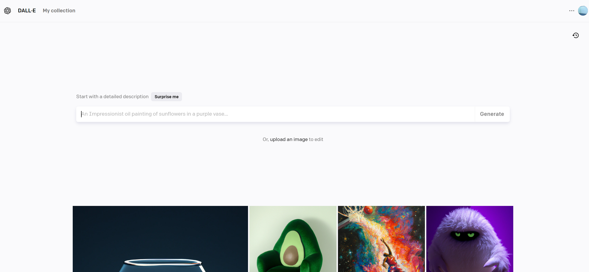
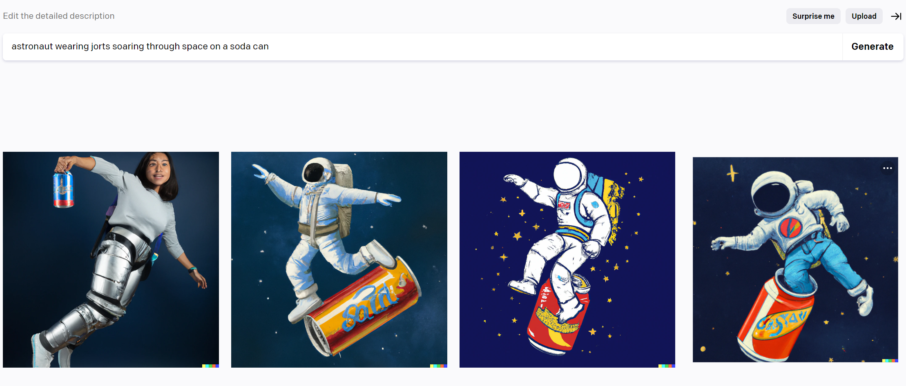
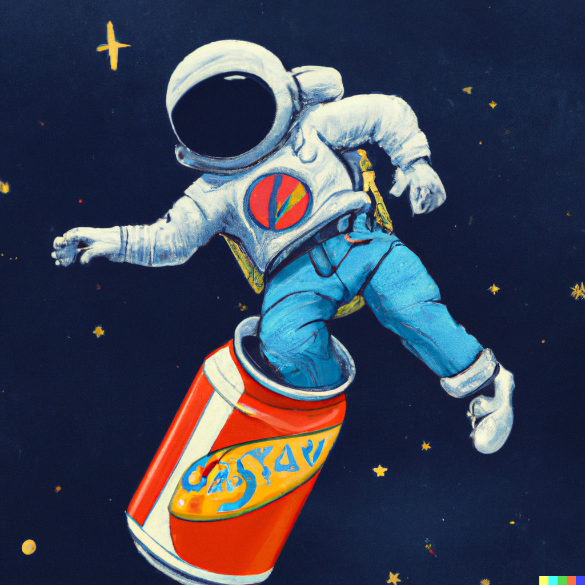

Artificial intelligence has been on the rise for decades, and now it's gotten to the point where it rapidly grows and becomes more advanced by the day. AI can do lots of everyday tasks and is learning more of them at an exponential rate, making our lives just a little bit easier each day. The barrier between reality and imagination is diminishing ever so quickly, and probably the most prime example of this statement is the world of AI-generated images.
So we have to ask: what are they, exactly?
Well, in short, you are met with a program. This program asks you to do one thing and one thing only - type in a prompt. Any prompt. Let your imagination run wild. Think of the wildest, strangest, most specific prompt you can think of. For example, let's say I want to see something along the lines of “astronaut wearing jorts soaring through space on a soda can”.
I'll then press enter and the program will take a few minutes to work its magic. After a few minutes passed, this was the result I got.
And now we have several iterations of our jort-wearing astronaut on his soda can. As you can see, the images are not crystal clear. They look painted and some features are more defined than others, yet they're clear enough that you're able to tell that they are, indeed, depicting an astronaut wearing jorts soaring through space on a soda can.
Are you interested now? If so, check out the rest of this website to learn more and take a journey through the world of AI generated images.